白衣大観音/群馬県高崎市
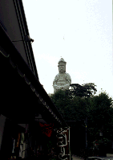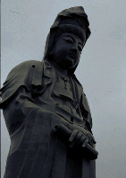
高崎の駅から真正面に見える観音山。坂上田村麿が京都清水寺をこの地に勧請して以来、観音信仰の地として栄えてきたこの古い歴史を持つ山は今でも高崎観光の中心地となっている。
しかし、現在観光の中心となっているのは清水寺ではない、皆さんよく御存じの白衣大観音の方である。
この観音様が出来たのは昭和11年。高さ41.8メートル、重さ5985トンというこの観音様の建設は戦前のコンクリート建設工事史に残る大事業だったことだろう。
現在も高崎市のシンボルとして大勢の観光客で賑わい、土産物屋の充実度も高い。
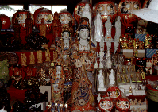 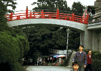
私の知る限り、胎内巡り型の大観音としては本邦最古のものである。つまり現在日本中に増殖中の大観音ファミリーの大ボスなのであーる。リスペクト。
この白衣大観音、以前紹介した観音洞窟のすぐ隣にある。そして奇妙なことにこの洞窟観音と白衣大観音、様々な共通点があるのだ。
まず、両方とも設立者が商人であるということ。観音洞窟のほうは呉服販売で財を成した山田徳蔵。一方、大観音の方は当時高崎の経済界の中心人物であった井上保三郎（手掛けた事業はガス、水道、電気、鉄道、製紙、製粉、製糸、製織、製材、銀行等々！）。また建設の時期も重なっている。
つまり（偶然か必然か）同じ時期に同じ山のほぼお隣同士で一方は空にそびえる大観音を造り、もう一方では地の底に幻想宮殿を造っていたのである。なんと濃い場所だろう。
しかし両者には対照的な点もある。それはそれぞれの工期の長さだ。
白衣大観音は昭和9年に11月に井上翁が昭和天皇との単独拝謁の記念として建てられたものである。で、開眼法要が昭和11年の10月。2年足らずの間に当時類を見ないとされる大工事を一気に成し遂げてしまったのである。このスピードは尋常ではない。で、山田翁の洞窟のほうは構想が大正7年、建設開始が昭和2年、それから37年後の昭和39年、翁が亡くなるまで造られ続けられた未完の洞窟である。この辺、己の財産を全て注入しようとした山田翁と、さらに隣の敷地（現在は遊園地がある）に外苑を造ろうとしていた井上翁との違いが如実に現れていて興味深い。自分の生涯を道連れにした洞窟と観光事業として展開していこうとする大観音の差といってもいいかと思う。最も井上翁のほうが先に亡くなってしまうのだが。大観音完成後わずか2年後の昭和13年の事である。
で、去年、還暦を迎えた大観音様、今迄はコンクリート打ち放しだったのだが文字通り白くペイントされ、ちょっと見にはとても戦前の建造物とは思えない程キレイになった。その時赤い太鼓橋も還暦祝いにプレゼントされた。内部は9階から成り螺旋階段で肩口の辺りまで登ることができる。
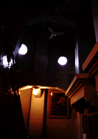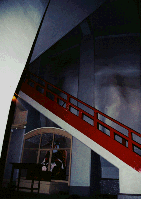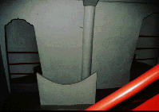
途中には建設当時の様子を描いた絵画や20体のレリーフ状の仏像が飾られている。こちらも還暦祝いのリニューアルなのか綺麗に彩色されていて閻魔様も機嫌が良さそうだ。
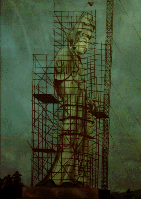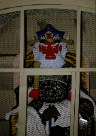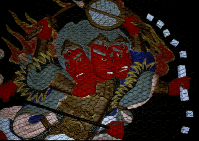
ちなみに観音像の原型製作は伊勢崎出身の彫刻家、森村酉三。完成した原型を若き日の田中角栄が自転車で運んだ、というチョットいい話もある。
現在、大観音像の前には彼の偉業を讃え銅像が建てられており、満足そうに自分の造った観音様を見つめている。
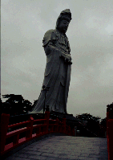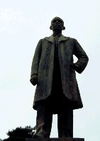
二人のオヤジの魂が炸裂したこの観音山のふたつの観音様。戦前の熱い時代の火照りが感じられるナイスな物件でした。
1998.10
珍寺大道場
HOME